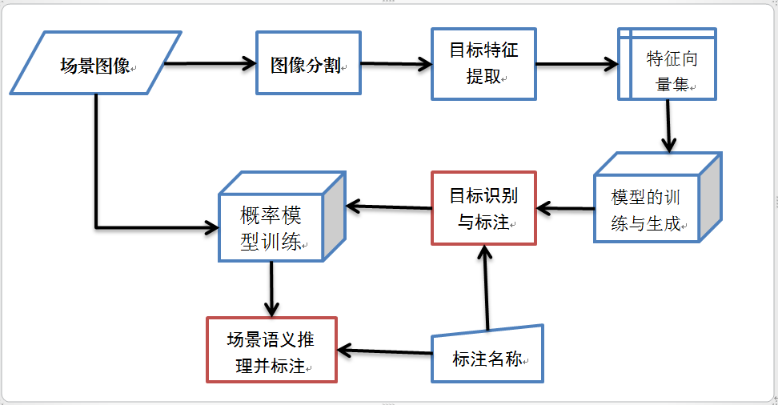

场景理解
场景理解是通过对图像的处理和分析，得到对场景的描述和解释。
目前对场景理解的研究主要有两大块：一是从视觉心理学和生理学出发，主要研究快速场景感知；二是研究场景分类的计算模型，通过建立简单统计计算模型实现几类场景（室内/室外等）的判断（Li et al., 2005; Oliva et al., 2001）。
快速场景感知的研究主要代表是基于Gist特征的场景全局感知分类和基于高斯统计概率模型的场景分类。本课题旨在同时实现增量的目标识别和场景分类，所以考虑自下而上的方法：先行获取低层图像视觉的特征进行目标识别，而后通过目标与场景分类的联系建立简单的统计模型对场景进行分类。
本课题利用自下而上的方法实现目标识别和场景分类，主要分为以下四块：图像分割、特征提取、目标识别和场景分类。

图1 场景理解流程图
在图像分割中是采用基于图的方式寻找图像中的边界以对图像进行分割。利用图的相关算法，可以将整个图像分割成多个连通图，也即是多个图像片段。
在得到了图像片段后，对图像片段进行处理和特征的提取（著名的算法有SIFT、SURF等），并以固定维度的向量表示，最终构成一个统一标准的向量集。
获得一定数量的向量构成的向量集（也就是训练集）后，对分类模型进行训练，从而构成相应的分类器对目标进行分类和识别。同一类的目标达到一定数量后，人为给该目标类贴上类标签。
依据某一场景中可能出现的目标的概率和频率，构造一个概率统计模型，并采用一定数量的样本集对其进行训练。根据训练好的概率模型和从低层图像特征信息中得出的目标类信息，对场景进行分类。同样，在同一类的场景有一定数量后，再贴上场景类的标签。
last modified: 2012-09-01